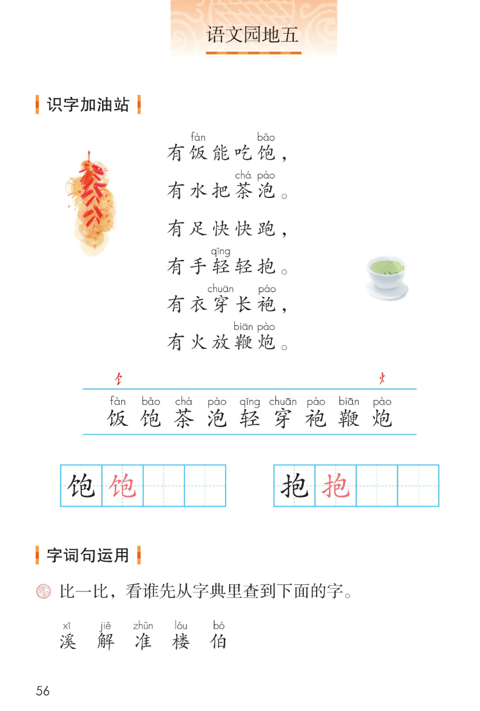
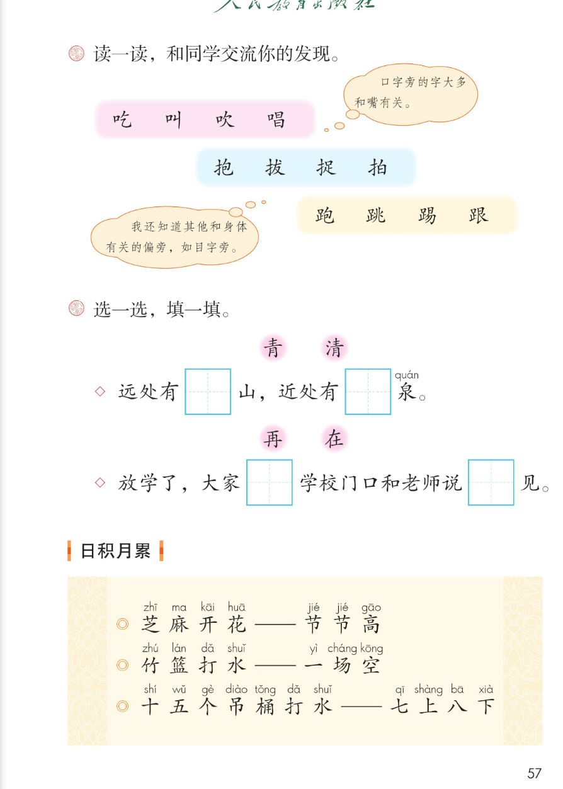
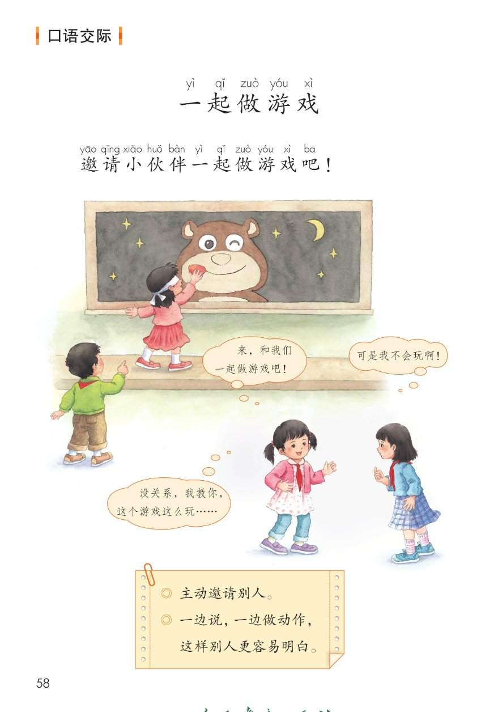
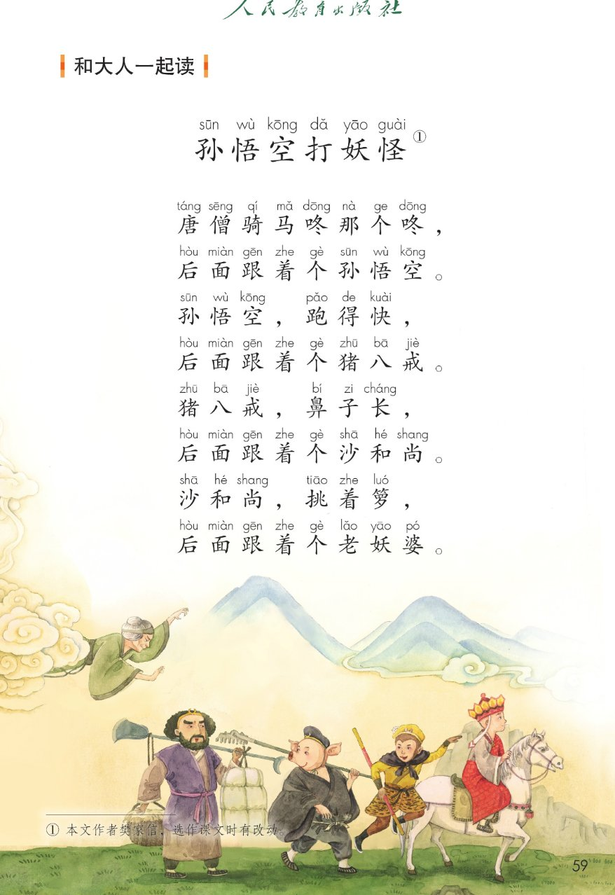
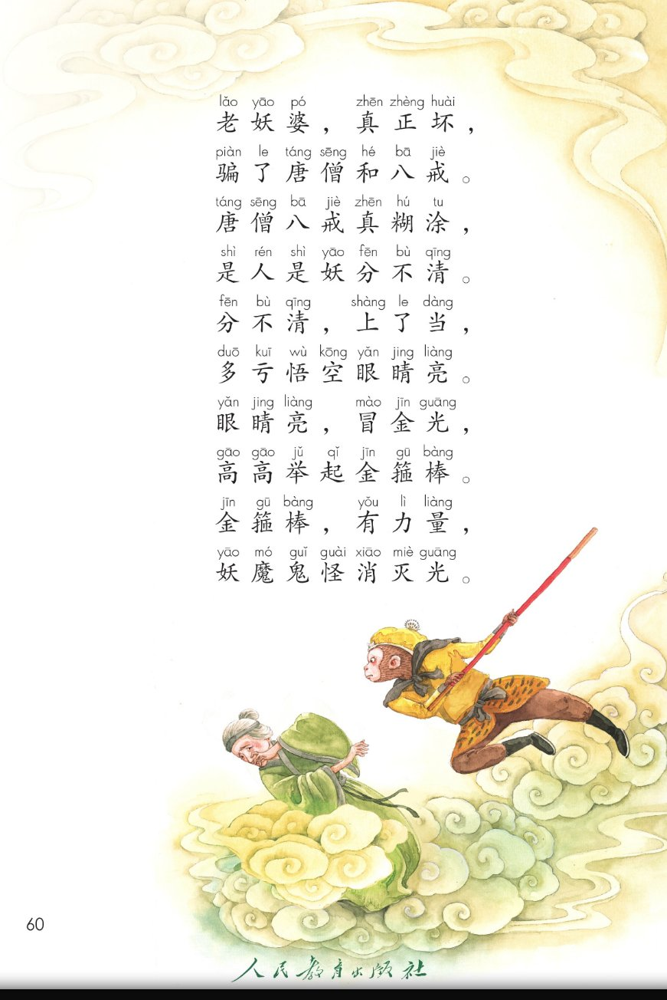

统编版 · 一年级下册 · 第五单元 · 语文园地五
语文园地五
识字加油站 · 字词句运用 · 日积月累
口语交际 一起做游戏
和大人一起读 孙悟空打妖怪
五块活动点读听一听拼音可开关课本原页放大
这一页把语文园地五整块搬了上来：先读「包」字族六行儿歌、认一认识字条里的 9 个字，发现「换个偏旁就换个意思」；再和同学比一比查字典、按偏旁给字归类、选字填空；然后积累 3 条歇后语；接着练一次口语交际《一起做游戏》，学会主动邀请、边说边做动作；最后和大人一起读《孙悟空打妖怪》，看看谁的眼睛亮。🐒
① 识字加油站 · 包字族儿歌 课本第 56 页 6 行儿歌 / 识字条 9 字 / 田字格 2 字
课本六行儿歌（照录，生字上方为课本注音）
有饭能吃饱，
有水把茶泡。
有足快快跑，
有手轻轻抱。
有衣穿长袍，
有火放鞭炮。
识字条上方两个红色偏旁：饣（食字旁，标在「饭」上）与 火（火字旁，标在「炮」上），照录课本原页。儿歌里生字上方的注音与识字条 9 字一一对应，拼音只作显示。
识字条（课本第 56 页蓝色横线之间，9 字照录）：
田字格练写（课本第 56 页：左表 饱、右表 抱，各带一个红色范字，照录）：
读一读，你发现了什么（配套提示，供参考）：六行儿歌里，饭、饱、茶、泡、轻、穿、袍、鞭、炮都和「包」的读音相近，偏旁却各不相同——食字旁管吃饭，三点水管泡茶，足字旁管跑，提手旁管抱……🌈 归类与解说为配套内容，原文以课本原页为准。
② 字词句运用 · 查字典 / 偏旁 / 选字填空 课本第 56~57 页 5 字 / 12 字 / 2 组填空
课本题目（照录）比一比，看谁先从字典里查到下面的字。
怎么查（配套复习提示，供参考）：前面语文园地三学过音序查字法：先找读音的第一个大写字母，再找音节和正文页码。🌈 查法说明为配套内容，以教材和字典为准。
课本题目（照录）读一读，和同学交流你的发现。
下面按课本三个色块分组；偏旁名称与分组标签为配套提示，供参考，课本原页只印色块与字。
口字旁 · 课本粉色色块
提手旁 · 课本蓝色色块
足字旁 · 课本黄色色块
课本气泡（照录）口字旁的字大多和嘴有关。
课本气泡（照录）我还知道其他和身体有关的偏旁，如目字旁。
和同学说一说（配套练习设计，供参考，答案不唯一）：三个色块里的字各带着什么偏旁？这些偏旁和身体的哪一部分有关？🌈 课本只给了一个例子，其余发现由同学自己交流，以教材和字典为准。
课本题目（照录）选一选，填一填。
远处有□山，近处有□泉。
备选：青 清 □ 为课本空格
参考答案（供参考）：青山、清泉。
和颜色、山有关用「青」；和水有关用三点水的「清」。
放学了，大家□学校门口和老师说□见。
备选：再 在 □ 为课本空格
参考答案（供参考）：在学校门口、说再见。
表示在哪里用「在」；表示又一次、再见用「再」。
选哪个字（配套参考答案，供参考）：① 远处有青山，近处有清泉——和颜色有关用「青」，和水有关用三点水的「清」。② 大家在学校门口和老师说再见——说在哪里用「在」，说又一次、告别用「再」。🌈 课本只印空格不印答案，以教材和字典为准。
③ 日积月累 · 歇后语 课本第 57 页 3 条 · 逐条点读
芝麻开花——节节高
课本日积月累 · 歇后语（照录）
竹篮打水——一场空
课本日积月累 · 歇后语（照录）
十五个吊桶打水——七上八下
课本日积月累 · 歇后语（照录）
歇后语什么样（配套解说，供参考）：前半句像一个小故事，破折号后半句点出意思，说话时常常只提前半句，让听的人自己猜后半句。🌈 意思解说为配套内容，以教材和字典为准。
拼音照录课本（「一场空」的「一」课本标 yì，是变调后的读音，未改成 yī）；拼音只作显示，不进朗读稿。
④ 口语交际 · 一起做游戏 课本第 58 页 3 个对话气泡 / 便签两条提示
课题（照录）
一起做游戏
课本开头一句（照录）
邀请小伙伴一起做游戏吧！
课本对话气泡（照录）来，和我们一起做游戏吧！
课本对话气泡（照录）可是我不会玩啊！
课本对话气泡（照录）没关系，我教你，这个游戏这么玩……
课本便签（照录）主动邀请别人。
课本便签（照录）一边说，一边做动作，这样别人更容易明白。
我也会邀请（配套说话支架，供参考，答案不唯一）：「________，和我们一起________吧！」对方不会玩时，可以说「没关系，我教你，________」。🌈 记住便签两条：主动邀请别人、一边说，一边做动作。
课本气泡里的省略号保留在可见文字中，朗读稿为便于听读改说「等等」；原文以课本原页为准。
⑤ 和大人一起读 · 孙悟空打妖怪 课本第 59~60 页 18 行 · 点一句读一句
课本第 59 页（配套分节，供参考）
唐僧骑马咚那个咚，
后面跟着个孙悟空。
孙悟空，跑得快，
后面跟着个猪八戒。
猪八戒，鼻子长，
后面跟着个沙和尚。
沙和尚，挑着箩，
后面跟着个老妖婆。
课本第 60 页（配套分节，供参考）
老妖婆，真正坏，
骗了唐僧和八戒。
唐僧八戒真糊涂，
是人是妖分不清。
分不清，上了当，
多亏悟空眼睛亮。
眼睛亮，冒金光，
高高举起金箍棒。
金箍棒，有力量，
妖魔鬼怪消灭光。
课本页脚注释（照录）：① 本文作者樊家信，选作课文时有改动。
和大人一起说一说（配套练习设计，供参考，答案不唯一）：① 顺着儿歌数一数：唐僧后面跟着谁，一个接一个排下去。② 为什么「唐僧八戒真糊涂」？谁的眼睛亮？③ 你最喜欢哪一句？和大人一人读一句接下去。🌈 说得清楚就对。
课本为这首儿歌全文逐字注音（拼音见下方课本原页）；此处沿用园地三《谁和谁好》的做法，只呈现汉字原文，不擅自补配注音。分节标签为配套划分，原文以课本原页为准。
课本原页 · 第 56~60 页
点图放大

第 56 页 · 识字加油站（包字族儿歌 / 识字条 / 田字格）· 字词句运用 查字典

第 57 页 · 字词句运用（偏旁归类 / 选一选填一填）· 日积月累 歇后语

第 58 页 · 口语交际 一起做游戏（邀请 / 对话气泡 / 便签提示）

第 59 页 · 和大人一起读 孙悟空打妖怪（上）· 含页脚注释①

第 60 页 · 孙悟空打妖怪（续）
教材原页截图照录；页面里的提示、分组与练习设计为配套内容，不冒充教材原文。